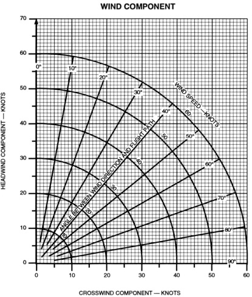
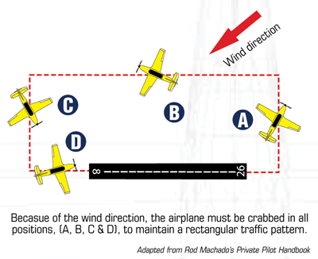

Crosswind Takeoff and Landing
Objective
To teach:
- How to take-off and land in a crosswind condition
Motivation
- When: take-off and landing into the crosswind
- Why: Aircraft might drift off the runway if not properly corrected for the wind drift
Threshold Knowledge Test
- How do we do the side-slip?
Essential background Knowledge
Crosswind calculation:
- Compare wind direction and active runway heading
- ATIS(magnetic)
- METAR/TAF(true)
- Windsock
Ex)
- ATIS: Wind 090 @ 15kts (CZBB) -> Runway 07
- Wind is 20° off the runway
- Headwind: 15kts / Crosswind: 5kts

- Maximum demonstrated crosswind for a particular aircraft(POH normal procedure section)
- Cessna 152 – 12kts demonstrated crosswind components(recommended not mandatory)
- Cessna 172 – 15kts demonstrated crosswind components(recommended not mandatory)
- These numbers are tested by test pilots, hence, personal limitations might apply
- CRFI (Canadian Runway Friction Index)
- Scale 0 – 1
- Crosswind speed has to be within the CRFI number (advisory not mandatory)
- Lower the CRFI number, less tolerance on crosswind speed
- Taxi input
- If wind is coming from the front, ailerons into the wind and elevator neutral
- If wind is coming from the back, ailerons dive away from the wind and elevator forward
Procedures
- Crew briefing(run-up area):
- Type of takeoff: Crosswind take-off
- Runway in use
- Rotation speed: 50kts or more (If airborne and get down, aircraft will drift off the runway)
- Climb out: Vx or Vy (with or without obstacle)
- Go no go decision point
- While taxiing
- Take-off
- Line-up (have full control column deflection into the wind)
- Full power (maintain centerline)
- As the aircraft accelerates, reduce control column input
- At Vr, control column should be neutral
- Climb out Vx or Vy (with or without obstacles) and crab into the wind
- Crab into the wind (pick a landmark)
- Crosswind turn
- pick a landmark for a nice rectangular circuit
- On downwind
- Pre-landing check
- Call (touch and go)
- On base
- P – 1500RPM
- A - 65kts
- Flaps 20°
- T - trim
- On final
- Maintain side-slip (keep the centerline)
- 200ft go/no-go decision height
- Landing
- Power off
- Flare
- Touch down main landing gear that is banked first, then the other landing gear touch down next
- Nose gear touch down
- As the aircraft decelerates, increase the control column wind input again

Safety
- Use less flaps for crosswind landing (rudder effectiveness)